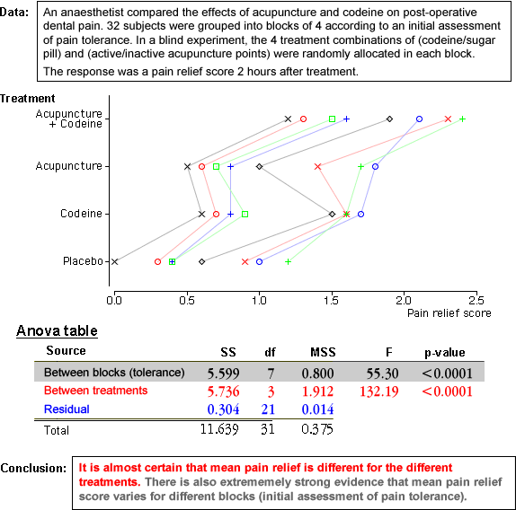

This diagram gives a few examples of analysis of variance tables and presents conclusions about the difference between the treatments.
Mention that we are rarely interested in testing for differences between the blocks, although that may be done.
The data sets are described in the questions.